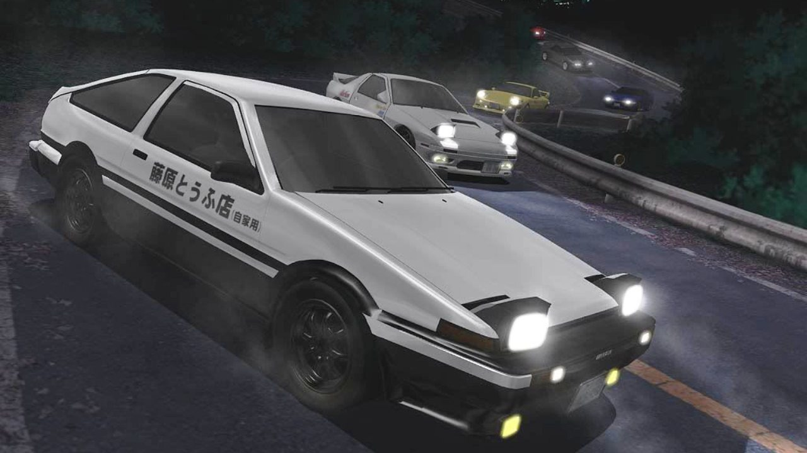

Initial D (頭文字イニシャルD, Inisharu Dī?) est un seinen manga écrit et dessiné par Shūichi Shigeno. Il a été prépublié entre juin 1995 et juillet 2013 dans le magazine Young Magazine, et été compilé en un total de quarante-huit tomes. La version française est publiée par Kazé.
Il a été adapté en série télévisée d'animation composée de plusieurs saisons, en OAV ou encore en films d'animation. Une adaptation en film live a également vu le jour, ainsi que de nombreux jeux vidéo.

Au Mont Akina, les courses entre pilotes chevronnés se déroulent tous les week-ends. Mais l'équipe locale des Speedstars semble dépassée par l'arrivée massive de stars du volant. Devant l'impossibilité de relever un défi qui leur est proposé, une seule solution apparaît : faire confiance à la légende urbaine qui court sur un mystérieux pilote local qui dévale la montagne à toute allure. Personne ne soupçonne alors Takumi Fujiwara, un lycéen de dix-huit ans ne connaissant rien aux voitures, d'être ce génie du volant. Le jeune homme ne fait que livrer le Tofu familial dans la région, par conséquent, il connaît les routes du coin par cœur qu'il aborde au volant de sa Toyota Sprinter Trueno (AE86), à une vitesse hallucinante.